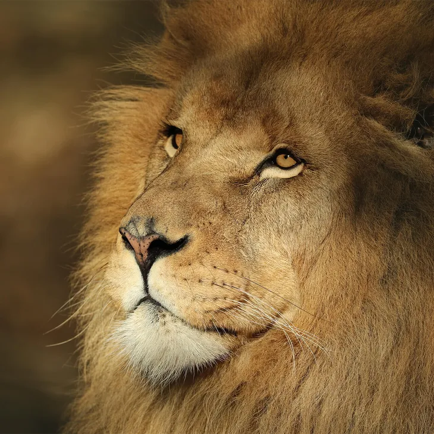
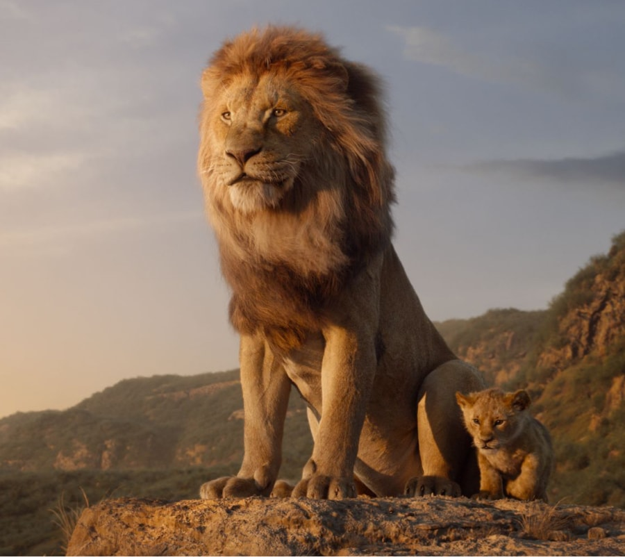
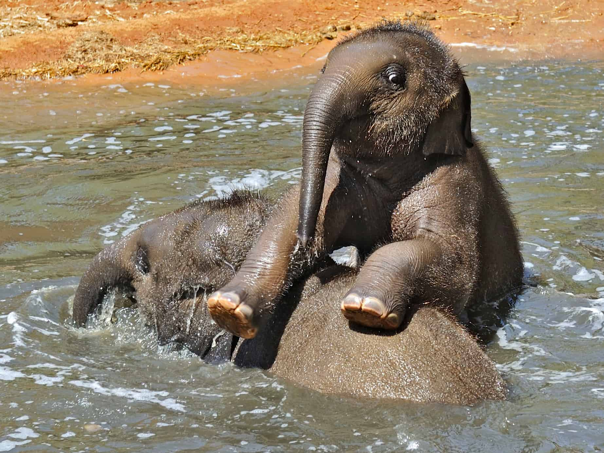
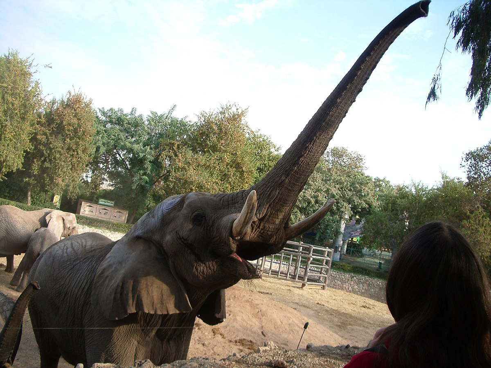

בעלי חיים
אריה
אריה (שם מדעי: Panthera leo)
הוא מין של טורף גדול מהסוג פנתר שבמשפחת החתוליים, והוא השני בגודלו בין בני הקבוצה דמויי חתול, אחרי תת-המין הסיבירי של הטיגריס.


האריה נפוץ בעיקר ביבשת אפריקה, אך גם במדינת גוג'ראט שבהודו. הוא ניזון מאוכלי עשב שונים אותם הוא צד, וכן מפגרים. בתרבות האנושית נחשב האריה סמל לגבורה וכוח, ולכן הוצמד לו הכינוי "מלך החיות".
במין אריה קיימים כ-20–35 תת-מינים, אף שמספרם המדויק שנוי במחלוקת.

שמות נוספים של האריה בשפה העברית הם: ליש, שחל, שחץ ולביא.
פיל
פיל הוא מונח לקבוצה פוליפילטית של שלושה מיני יונקים – פיל סוואנה אפריקני, פיל יער אפריקני ופיל אסייתי – שהם
חיות היבשה הגדולות ביותר בעולם והמינים היחידים ששרדו במשפחת הפיליים. בעבר היו מינים נוספים מהמשפחה,
ביניהם הממותה, הפלאולוקסודון והסטגוטטרבלודון שאינם נחשבים לפילים רגילים.


המאפיין הבולט ביותר של הפילים הוא החדק, שבעזרתו הם שותים, אוכלים ומתרחצים.

הפיל האסייתי ופיל הסוואנה האפריקני מצויים בסכנת הכחדה, בעוד פיל היער האפריקני נמצא בסכנת הכחדה חמורה.
כלב הבית
כלב הוא שמו היומיומי של כלב הבית (שם מדעי: Canis lupus familiaris), תת-מין של הזאב המצוי (Canis lupus), ממשפחת הכלביים, מסדרת היונקים הטורפים.

אוגר סיבירי
אוגר סיבירי (שם מדעי: Phodopus sungorus)
הוא בעל חיים, ממשפחת האוגריים, השייך לסדרת המכרסמים. לאוגר זה תפוצת בר גבוהה והוא נפוץ גם כחיית מחמד, מבויתת למחצה. תחום מחייתו הטבעי של המין הוא בעיקר בסיביר, וניתן למצאו גם בקזחסטן, מונגוליה ובמנצ'וריה.

ברווז
בשם ברווז (צירוף של המילים "בר" ו"אווז" – משום שהם קטנים מן האווז. בר בארמית פירושו בן, בר אווז – בן האווז) קוראים למספר מינים במשפחת הברווזיים (Anatidae).
הברווזים אינם קבוצה משותפת אך הם בכל זאת שונים מסוגים אחרים במשפחה כמו אווזים וברבורים בכך שהם בעלי גוף קטן יותר, צוואר קצר יותר ומקור גדול יותר.

חמוס
חָמוֹס המכונה גם חמוֹס הבית (שם מדעי: Mustela putorius furo; מספר מיני סמוריים דומים גם מכונים בשם "חמוס") הוא תת-מין של סמור שבוית כנראה מהחמוס המבאיש. אורך הזכרים יכול להגיע במקרים נדירים למטר מקצה האף עד קצה הזנב. משקלם של הזכרים 1-3 ק"ג ושל הנקבות 0.5-2 ק"ג. החמוס הוא קרניבור מובהק, כלומר הוא תלוי באספקת מזון מהחי.